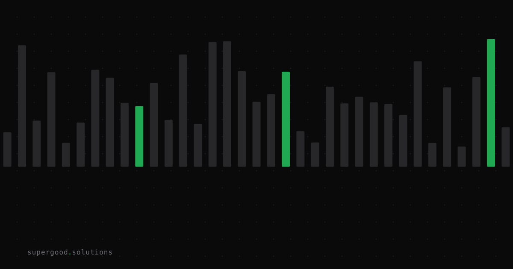

Before You Budget for AI, Know Your Problem's Shape
TL;DR: OpenAI spent somewhere between $15M and $40M+ running 10,000 agents for 88 hours to crack a single math problem. That number only makes sense for one kind of problem, and most enterprise AI budgets are being written for a different kind entirely.
Key Insight
In September, OpenAI said an internal model helped prove a result on the Navier-Stokes equations, one of math's seven Millennium Prize Problems, by coordinating close to 10,000 agents in parallel over roughly 88 hours. Reported compute costs vary by outlet, from around $15M to north of $40M, burning through an estimated 130 billion tokens.
That's the right spend for that specific problem, because it has a particular shape: a huge space of possible proof paths, and a cheap, mechanical way to check whether any given path is correct (the formal proof checker Lean). Throw thousands of agents at different paths, verify the candidates automatically, keep the one that checks out. Cost barely matters when the payoff is a one-time scientific result and verification is nearly free.
Most enterprise AI problems are the opposite shape. They are high-volume, repeated thousands of times a day, and there is no cheap way to automatically verify whether an output is "correct" beyond a human glancing at it. Ticket classification, contract summarization, customer email drafts: none of these have a Lean-style checker sitting underneath them. Running a 10,000-agent swarm on a problem like that buys more plausible-sounding text to review, not more confidence.
Why Teams Miss This
Vendors demo agent swarms on exactly the problems where swarms shine: open-ended search with a clear verification signal. Then procurement teams watch the demo, hear "agentic," and assume the architecture generalizes to their own backlog of recurring tasks. It doesn't, because nobody asked the two questions that actually determine architecture: can we cheaply verify a candidate answer, and are we solving this once or ten thousand times a day?
Skip those questions and the budget conversation defaults to "more agents sounds more thorough." That's how a classification pipeline that should cost fractions of a cent per call ends up priced like a research moonshot.
How to Actually Do It
Before anyone writes a line item for "multi-agent" anything, run the problem through three checks:
- Verification cost. Is there a fast, cheap, mostly automatic way to check whether a candidate output is right? Lean checking a formal proof is near-zero cost. A human re-reading a drafted email is not. If verification is expensive, parallel exploration just multiplies review work instead of multiplying confidence.
2. Frequency. Is this a rare, high-value, one-off problem, or something you'll run thousands of times a week? One-off problems can absorb a wide cost range because you're paying once for a result you keep forever. Recurring problems need the opposite optimization: lowest reliable cost per unit, not maximum exploration per unit.
3. Decomposability. Does the task actually split into independent sub-problems that can run in parallel and compete, or is each step dependent on the last? Swarms help with fan-out-and-race problems. They add nothing to strictly sequential work, where a single well-prompted model with good context is faster and cheaper than coordinating a crowd.
A rough filter:
if verification_is_cheap and frequency_is_low:
swarm / parallel search is probably worth the spend
elif frequency_is_high:
optimize for cost-per-call and consistency: single model, strong prompt, caching
else:
default to the simplest architecture that passes your eval setWhat We've Learned
We've started asking every team that walks in wanting an "agentic" rebuild to answer the verification-cost and frequency questions before touching architecture. Nine times out of ten, the honest answers point to a single well-tuned model with a tight eval loop, not a swarm. The $40M proof is a useful headline precisely because it's the exception. It shows what agent swarms are for, and your production workload probably isn't that.
Sources
- OpenAI's Navier-Stokes claim and the compute figures: Inside OpenAI's Navier-Stokes Claim: The Proof, the AI Effort, and the Credit Fight
- Coverage of the 10,000-agent, 88-hour effort: OpenAI claims 10,000 AI agents solved one math problem
- Background on the proof and the credit dispute that followed: OpenAI Claims a Navier-Stokes Proof, Amid a Dispute Over Credit
Have a specific workflow in mind?
Bring it to a Quick Scan — a live working session where we'll tell you honestly whether it should be an agent, a workflow, or left alone, before you spend a dollar building it. You get 3 prioritized recommendations on the call, a one-page summary after, and the $500 credited toward any engagement within 30 days.
Get new posts + practical agent-ops notes
One email when something new goes up. No nurture sequence, no spam — unsubscribe whenever you want.